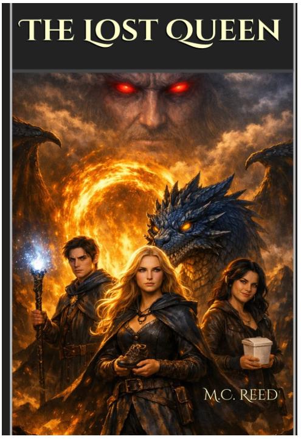
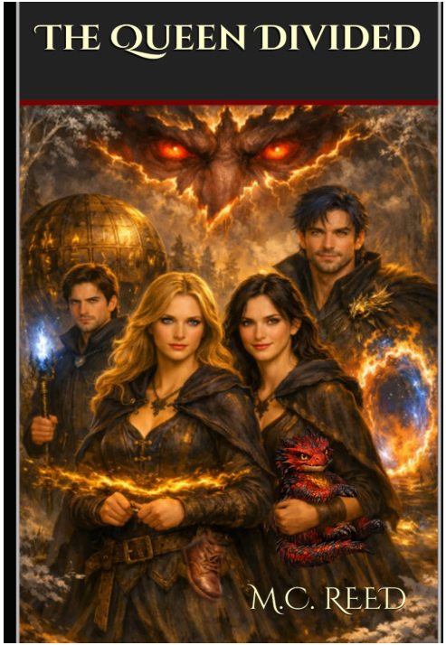
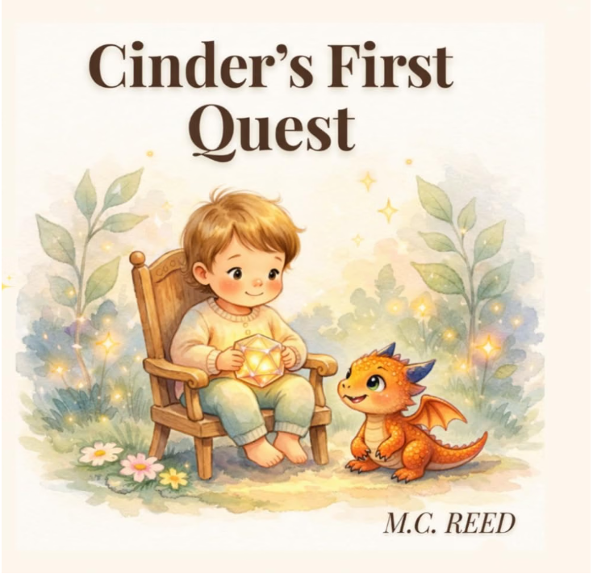

Welcome
Welcome to the official website of M. C. Reed, author of The Lost Queen, The Queen Divided, and Cinder's First Quest.
Inspired by the mountains and lakes of the Rocky Mountains, M. C. Reed creates stories filled with adventure, courage, magic, and unforgettable characters. Whether writing epic fantasy or children's adventures, each story explores how ordinary people can discover extraordinary destinies.
Featured Books


